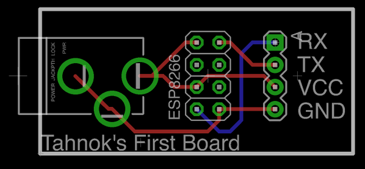

BLUEBRIM: RGB lights on a hat with bonus bluetooth
I recently needed to look swanky for a 1920s themed Holiday/Christmas party and I asked myself: What’s the swankiest?

Of course! RGD LEDs on a hat! Controlled by Bluetooth! I shall call it… Project BLUE BRIM (because code names are awesome)
Hardware
A trip to the second hand store and a pair of sciscorrs to remove an unwanted bow later, I had myself a pin stripe hat like this:

next I had to acquire the rest of my materials as follows:
- 1 Adafruit Flora at room temperature
- 1 Flora Bluefruit LE Module sifted
- a 34 Neopixel long strip lightly buttered and cut down to size
- 1 Lithium Ion Batter at 3.7v. I went with this 2500mAh model, but it’s a bit… overkill
Assembly is relatively straightforward. The circuit diagram looks like this:
Basically, the Bluetooth module is connected to the serial pins on the Flora. Next, the Neopixel strip connected by attaching D6 to DIN, and VBATT to VIN (and GND to GND)
All soldered together it looks like this

I attached the LEDs to the hat by cutting a small whole with a sharp knife at the back of the hat large enough to fit the connectors. I then used the adhesive backing on the strip to attach it to the hat, and it seems to be holding well. On the top of the hat, I folded a few small strips of Gorilla tape in on itself and stuck those on the back of the flora and the ble module. Finally, I slipped the battery into the small inner brim, and taped it to the back side of the hat. When put together like this, it was actually really comfortable to wear. It’s a bit off balance, so I wouldn’t recommend trying any hat tricks.
Software
Writing the software for the hat was actually my favourite part. Step 1 was getting the bluetooth stuff wired up. Just like my last project I tried to write my own bluetooth socket reading from scratch but it was a bit too hacky for my liking. Instead, I used the packet parser that adafruit provides, but I made sure to study the source closely to try and pick up some tricks for next time. Basically, it looks like using a few nested loops and a timeout is the way to go.
The next bit was my favourite favourite part: MAKING PRETTY LIGHT PATTERNS!
Since I was going to use the Adafruit Bluefruit LE Connect App and they have a neat control pad with 8 buttons, I figured I would need 8 patterns. Because there were 2 sections, I decided that 4 patterns would be multi colour, and 4 patterns would use the current colour chosen with the colour picker part of the app.
The 4 multicolour patterns are:
SPARKLE which has a single randomly coloured pixel. It looks like this:
CYCLE which fades through 256 colours, with the whole strip lit with one colour at a time.
RAINBOW which has a continuously changing section of rainbow, where each pixel is a different colour
PARTY where each pixel is a random colour
The 4 single colour patterns are:
CYLON (or KITT depending on how old you are) has one pixel sliding back and forth across the front of the hat
SOLID it’s a solid colour. What more do you want?
PULSE slowly changes the brightness from nothing, to full brightness, back down to nothing again
TWIST has a single pixel spinning around and around (and around (and around))
You can see my source code in it’s entireity on my BlueBrim repo on Github, which uses some fancy multi file arduino to make it a bit easier to read. I hope you learned something reading this, as a thank you here is a picture of my dog wearing the miniature version of this

Makerfaire Ottawa: Rule 110
Wooohoo! I can now officially cross something off my bucket list:
- run marathon
-
present project at Makerfaire - world domination?
So, what was my project? Here’s a pic of it
What do you mean you don’t know what is from that?
WELL.
What I built was basically part art, part math and part eletronics. I hooked up an RGB LED Matrix (specifically this one from adafruit) to an Arduino Mega along with 32 switches. (Note to future self: don’t ever try and wire up 32 switches.) These switches provided the starting row for generating a pattern on the led matrix based on rule 110: a 1 dimensional cellular automaton that generates a pattern like this:
(from @rule110_bot)
but on an RGB LED Matrix, so it looks more like

Why??
This all started out when I came across this fabulous kickstarter: KnitYak: Custom mathematical knit scarves by fbz, which was for rule 110 scarfs. I was immediatly struck by how beautiful the pattern was, and intriguied by the fact that it was being generated algorithmically. After reading several wikipedia articles, my interest in the pattern had only grown further. I ended up writing a ruby implementation of rule 110 that could output patterns to your terminal, and then to pngs, and then finally to twitter.
But it was hard to mess around with the starting row and explore the patterns that got generated. I wanted something you could interact with, so when I saw that the Ottawa Makerfaire was looking for projects I figured it would be a perfect oppurtunity to force myself to build something and to have something interactive for attendees to play with.
Hardware
Here’s what inside:
- Arduino Mega
- 64x32 RGB LED matrix
- Shift Registers (SN74HC165N) x 6
- Rocker switches x 32
- 8 position rotary switches x 2
- 10K resistors x (lots)
The arduino mega is the brains of this particular operations. I needed to use it over an uno because of the higher clock speed. Turns out you need a fair bit of horse power to drive 2048 RGB LEDs. Who would have thunk?
RGB LED Matrix
How do you actually drive 2048 LEDs?
Basically, you can’t have all those LEDs on at the same time (because power draw), so the LED matrix only turns 2 (out of 32) rows on at a time. In order to select which row you want to light up, you use the 4 address select pins to select one of 16 pairs of rows.
Once you have a row selected, you need to fill it with colour. You can set the colour of 2 pixels at a time using 2 sets of Red, Green and Blue pins. When your desired colours are chosen you “shift” in the data, using the clock pin. This way you can fill an entire row of pixels by setting the colour, then clocking in order to set the next pixel. Finally, you toggle the latch pin, which shows the entire row of pixels. If you do this FAST enough (like 200Hz aka 1 row every 5ms), the display looks to be continuously on to us puny humans.
I tried to write my own driver for the display in C for the Propeller, but I had some serious flickering issues that I wasn’t able to fix… Given that I didn’t want to give everyone at makerfaire a headache / induce seizures I chose to use this library from Adafruit. It’s a very interesting read because they do some neat things like unrolling loops and using Binary Coded Modulation (like PWM) in order to give a greater color depth than the 3 bit color you start with.
Shift Registers
I ended up using 6 shift register for input in this project. Why? Well it means that I could use 4 pins to read 32 switches (aka 32 bits of data) all in one go. That feat is accomplished with 4 shift register daisy chained together. Each input pin on each of the shift registers has a pull down resistor in order to deal with electrical gremlins, and also to make my assembly time much much longer.
I also used 2 shift registers to read the state of the two knobs I have for selecting colours. Those knobs have 8 pins to indicate which position the knob is in currently.
Software
My code can be found below:
#include <Adafruit_GFX.h> // Core graphics library
#include <RGBmatrixPanel.h> // Hardware-specific library
#define OE 9
#define LAT 10
#define CLK 11
#define A A0
#define B A1
#define C A2
#define D A3
RGBmatrixPanel matrix(A, B, C, D, CLK, LAT, OE, false, 64);
const int data_pin = 6; // SER_OUT (serial data out)
const int shld_pin = 5; // SH/!LD (shift or active low load)
const int clk_pin = 3; // CLK (the clock that times the shifting)
const int ce_pin = 4; // !CE (clock enable, active low)
const int data_pin_2 = 48;
const int ce_pin_2 = 46;
const int shld_pin_2 = 47;
const int clk_pin_2 = 49;
byte incoming1;
byte incoming2;
byte incoming3;
byte incoming4;
byte colour1;
byte colour2;
//int start[] = { 0, 1, 0, 0, 1, 0, 1, 0,
// 0, 0, 1, 0, 1, 1, 0, 1,
// 1, 1, 1, 0, 0, 1, 1, 1,
// 0, 1, 0, 1, 1, 0, 0, 1
// };
int start[32] = {0};
int* row1;
int* row2;
int x = 0;
int y = 0;
void setup() {
//shift registers for buttons
Serial.begin(9600);
// Initialize each digital pin to either output or input
// We are commanding the shift register with each pin with the exception of the serial
// data we get back on the data_pin line.
pinMode(shld_pin, OUTPUT);
pinMode(ce_pin, OUTPUT);
pinMode(clk_pin, OUTPUT);
pinMode(data_pin, INPUT);
pinMode(shld_pin_2, OUTPUT);
pinMode(ce_pin_2, OUTPUT);
pinMode(clk_pin_2, OUTPUT);
pinMode(data_pin_2, INPUT);
// Required initial states of these two pins according to the datasheet timing diagram
digitalWrite(clk_pin, HIGH);
digitalWrite(shld_pin, HIGH);
digitalWrite(clk_pin_2, HIGH);
digitalWrite(shld_pin_2, HIGH);
read_shift_regs();
read_color_shift_regs();
Serial.println("colours: ");
print_byte(colour1);
print_byte(colour2);
Serial.println(transform(colour1));
Serial.println(transform(colour2));
fill_starting_row();
//matrix
matrix.begin();
matrix.fillScreen(0);
row1 = start;
displayRow(row1);
row2 = (int*) malloc(sizeof(int) * 32);
}
int i = 0;
int j = 0;
void loop() {
for (x = 0; x < 64; x++) {
int* row;
if (x % 2) {
apply_rule(row2, row1);
row = row2;
} else {
apply_rule(row1, row2);
row = row1;
}
// j = (j + 1) % 24;
// Serial.print(x);
// Serial.print(": ");
// displayRow(row);
// Serial.print("row1 ");
// displayRow(row1);
// Serial.print("row2 ");
// displayRow(row2);
for (y = 0; y < 32; y++) {
if (row[y]) {
matrix.drawPixel(x, y, transform(colour1));
} else {
matrix.drawPixel(x, y, transform(colour2));
}
}
delay(100);
}
for (;;);
}
void apply_rule(int a[32], int b[32]) {
for (int i = 0; i < 32; i++) {
if (i == 0 || i == 31) {
b[i] = a[i] & 1;
} else {
if ( (a[i - 1] && a[i] && !a[i + 1]) ||
(a[i - 1] && !a[i] && a[i + 1]) ||
(!a[i - 1] && a[i] && a[i + 1]) ||
(!a[i - 1] && a[i] && !a[i + 1]) ||
(!a[i - 1] && !a[i] && a[i + 1])
) {
b[i] = 1;
} else {
b[i] = 0;
}
}
}
// return b;
}
// Input a value 0 to 24 to get a color value.
// The colours are a transition r - g - b - back to r.
uint16_t Wheel(byte WheelPos) {
if (WheelPos < 8) {
return matrix.Color333(7 - WheelPos, WheelPos, 0);
} else if (WheelPos < 16) {
WheelPos -= 8;
return matrix.Color333(0, 7 - WheelPos, WheelPos);
} else {
WheelPos -= 16;
return matrix.Color333(0, WheelPos, 7 - WheelPos);
}
}
byte read_shift_regs()
{
byte the_shifted = 0; // An 8 bit number to carry each bit value of A-H
// Trigger loading the state of the A-H data lines into the shift register
digitalWrite(shld_pin, LOW);
delayMicroseconds(5); // Requires a delay here according to the datasheet timing diagram
digitalWrite(shld_pin, HIGH);
delayMicroseconds(5);
// Required initial states of these two pins according to the datasheet timing diagram
pinMode(clk_pin, OUTPUT);
pinMode(data_pin, INPUT);
digitalWrite(clk_pin, HIGH);
digitalWrite(ce_pin, LOW); // Enable the clock
// Get the A-H values
//the_shifted = shiftIn(data_pin, clk_pin, MSBFIRST);
incoming1 = shiftIn(data_pin, clk_pin, MSBFIRST);
incoming2 = shiftIn(data_pin, clk_pin, MSBFIRST);
incoming3 = shiftIn(data_pin, clk_pin, MSBFIRST);
incoming4 = shiftIn(data_pin, clk_pin, MSBFIRST);
digitalWrite(ce_pin, HIGH); // Disable the clock
return the_shifted;
}
byte read_color_shift_regs()
{
byte the_shifted = 0; // An 8 bit number to carry each bit value of A-H
// Trigger loading the state of the A-H data lines into the shift register
digitalWrite(shld_pin_2, LOW);
delayMicroseconds(5); // Requires a delay here according to the datasheet timing diagram
digitalWrite(shld_pin_2, HIGH);
delayMicroseconds(5);
// Required initial states of these two pins according to the datasheet timing diagram
pinMode(clk_pin_2, OUTPUT);
pinMode(data_pin_2, INPUT);
digitalWrite(clk_pin_2, HIGH);
digitalWrite(ce_pin_2, LOW); // Enable the clock
// Get the A-H values
//the_shifted = shiftIn(data_pin, clk_pin, MSBFIRST);
colour1 = shiftIn(data_pin_2, clk_pin_2, MSBFIRST);
colour2 = shiftIn(data_pin_2, clk_pin_2, MSBFIRST);
digitalWrite(ce_pin_2, HIGH); // Disable the clock
return the_shifted;
}
// A function that prints all the 1's and 0's of a byte, so 8 bits +or- 2
void print_byte(byte val)
{
byte i;
for (byte i = 0; i <= 7; i++)
{
Serial.print(val >> i & 1, BIN); // Magic bit shift, if you care look up the <<, >>, and & operators
}
Serial.print("\n"); // Go to the next line, do not collect $200
}
void fill_starting_row() {
int i = 0;
byte data;
for (i = 0; i < 8; i++) {
data = incoming1 >> i & 1;
thang(i, data);
start[i] = data;
}
for (i = 8; i < 16; i++) {
data = incoming2 >> (i - 8) & 1;
thang(i, data);
start[i] = data;
}
for (i = 16; i < 24; i++) {
data = !(incoming3 >> (i - 16) & 1);
thang(i, data);
start[i] = data;
}
for (i = 24; i < 32; i++) {
data = !(incoming4 >> (i - 24) & 1);
thang(i, data);
start[i] = data;
}
Serial.print("\n");
}
void thang(int i, byte thing) {
// Serial.print(i);
// Serial.print(" : ");
Serial.print(thing, BIN);
Serial.print(" ");
}
void displayRow(int b[32]) {
for (int a = 0; a < 32; a++) {
thang(a, b[a]);
}
Serial.print("\n");
}
uint16_t transform(byte input) {
// return matrix.Color333(7 - WheelPos, WheelPos, 0);
switch (input) {
case 1:
return Wheel(0);
case 2:
return Wheel(3);
case 4:
return Wheel(6);
case 8:
return Wheel(9);
case 16:
return Wheel(12);
case 32:
return Wheel(15);
case 64:
return Wheel(18);
case 128:
return Wheel(21);
default:
return Wheel(24);
}
}It’s pretty bad because I wrote it the night before (as is my tradition for any large project)
Writing this was a fun excersise to see how well I understand arrays / pointers in C. It turns out I still don’t grok them, but with sufficient sacrifices to Malloc (all praise to It), I managed to get things working.
Math
So, what the heck is the pattern I’m using anyway?
Basically, each pixel/cell (I’m going to call them cells from now on), except for the first row of dots, is set to one of two colors based on the 3 cells above it according to the following table:
| 111 | 110 | 101 | 100 | 011 | 010 | 001 | 000 |
| 0 | 1 | 1 | 0 | 1 | 1 | 1 | 0 |
Where 1 is an “alive” cell and 0 is a “dead” cell. The name comes from the fact that writing out 01101110 in decimal is 110, and there are other rules like rule 30 and rule 184.
If our alive colour was red, and our dead colour was blue, then a cell who had a red pixel up and to the left, another red pixel directly above, and a blue pixel above and to the right, then it would be alive and thus red. In my project colours of the alive and dead cells are set using the 2 knobs.
Mind blowing fact: Rule 110 is TURING COMPLETE
 (number 1 result on google image search for turing complete, filtered by gifs)
(number 1 result on google image search for turing complete, filtered by gifs)
For those of you with minds still unblown, I am going to assume it’s because you aren’t familiar with turing completeness yet. Basically, if a problem or program can be computed it can be run on a machine that is turing complete. That means if I had enough time (and enough will) I would program a pattern into a rule 110 system that couple compute prime numbers, or play minecraft.
Reactions
There were so many different reactions to my project. Kids were immediately interested in playing with the buttons and the knobs. Adults I had to cajole and encourage, which I think is a bit sad. If this massive bank of switches wasn’t supposed to be touched, don’t you think I would have indicated that some way?
I could also tell immediately the people that wanted to figure out the pattern. The first thing they would do after reseting the display for the first time, was to change a few switches and see what changed. Then they would set all the switches to one position (up or down) and try that. Then they would change just one switch. The entire project was worth it for the looks on people’s faces when they learned something new, either than confirmed some expectation, or suprised them
Conclusions
All in all, it was totally a good idea for me to apply to makerfaire. This is one of the largest electronics projects I’ve yet completed, and I doubt I would have done it without the thought of an empty table. I guess I should start thinking about next year…
Chameleon Scarf

This weekend Danielle and I have been working on building a scarf with LEDs in it that will match whatever colour you place against it. That’s right, it’s a CHAMELON SCARF. Here are the steps
Step 0: GET INSPIRED!
I was stumbling through the Adafruit Learning Site and I found this:

ZOMG! It’s so cool! BONUS: I had all the parts just lying around at home…
Step 1: Gather materials
You will need the following:
- Adafruit Flora
- Sewable Neopixels
- Steel thread
- Conductive Fabric
- Adafruit Color Sensor (TCS34725)
- Clear nail polish
- Fabric for a scarf
You can get most of this in a single pack from Adafruit here: https://www.adafruit.com/products/1458

Step 2: Get Sewing
Here’s the basic circuit diagram

We decided to go with more of a banada style scarf versus a proper loop.

The data lines for the neo pixels are actually strips of conductive fabric, rather than steel thread.
Step 3: Solder!
I really liked the idea of using fabric snaps as shown here: https://learn.adafruit.com/flora-snaps/overview
It’s actually pretty easy to solder, although the first few times I had too much solder on the snap and they didn’t fit well I even put some solder on the other half of the snaps to I could easily add and remove the colour sensor
Step 4: Debug
Check ALL the wires.
Do it again.
Step 5: Code
#include <Wire.h>
#include "Adafruit_TCS34725.h"
#include <Adafruit_NeoPixel.h>
// Parameter 1 = number of pixels in strip
// Parameter 2 = pin number (most are valid)
// Parameter 3 = pixel type flags, add together as needed:
// NEO_RGB Pixels are wired for RGB bitstream
// NEO_GRB Pixels are wired for GRB bitstream
// NEO_KHZ400 400 KHz bitstream (e.g. FLORA pixels)
// NEO_KHZ800 800 KHz bitstream (e.g. High Density LED strip)
Adafruit_NeoPixel strip = Adafruit_NeoPixel(5, 10, NEO_GRB + NEO_KHZ800);
Adafruit_NeoPixel onboard = Adafruit_NeoPixel(1, 8, NEO_RGB + NEO_KHZ400);
// our RGB -> eye-recognized gamma color
byte gammatable[256];
Adafruit_TCS34725 tcs = Adafruit_TCS34725(TCS34725_INTEGRATIONTIME_50MS, TCS34725_GAIN_4X);
void setup() {
Serial.begin(9600);
Serial.println("Color View Test!");
strip.begin();
strip.show(); // Initialize all pixels to 'off'
onboard.begin();
onboard.show();
if (tcs.begin()) {
Serial.println("Found sensor");
} else {
Serial.println("No TCS34725 found ... check your connections");
while (1) {
// halt!
error();
}
}
// thanks PhilB for this gamma table!
// it helps convert RGB colors to what humans see
for (int i = 0; i < 256; i++) {
float x = i;
x /= 255;
x = pow(x, 2.5);
x *= 255;
gammatable[i] = x;
//Serial.println(gammatable[i]);
}
for (int i = 0; i < 3; i++) { //this sequence flashes the first pixel three times as a countdown to the color reading.
strip.setPixelColor (0, strip.Color(188, 188, 188)); //white, but dimmer-- 255 for all three values makes it blinding!
strip.show();
delay(1000);
strip.setPixelColor (0, strip.Color(0, 0, 0));
strip.show();
delay(500);
}
uint16_t clear, red, green, blue;
tcs.setInterrupt(false); // turn on LED
delay(60); // takes 50ms to read
tcs.getRawData(&red, &green, &blue, &clear);
tcs.setInterrupt(true); // turn off LED
Serial.print("C:\t"); Serial.print(clear);
Serial.print("\tR:\t"); Serial.print(red);
Serial.print("\tG:\t"); Serial.print(green);
Serial.print("\tB:\t"); Serial.print(blue);
// Figure out some basic hex code for visualization
uint32_t sum = red;
sum += green;
sum += blue;
sum += clear;
float r, g, b;
r = red; r /= sum;
g = green; g /= sum;
b = blue; b /= sum;
r *= 256; g *= 256; b *= 256;
Serial.print("\t");
Serial.print((int)r, HEX); Serial.print((int)g, HEX); Serial.print((int)b, HEX);
Serial.println();
Serial.print((int)r ); Serial.print(" "); Serial.print((int)g); Serial.print(" "); Serial.println((int)b );
colorWipe(strip.Color(gammatable[(int)r], gammatable[(int)g], gammatable[(int)b]), 0);
}
// Fill the dots one after the other with a color
void colorWipe(uint32_t c, uint8_t wait) {
for (uint16_t i = 0; i < strip.numPixels(); i++) {
strip.setPixelColor(i, c);
strip.show();
delay(wait);
}
}
void loop() {
//loop is empty because it only takes the color reading once on power up! Turn the scarf off and on again to change the color.
}
void error() {
Serial.println(" :(");
onboard.setPixelColor(0, strip.Color(80, 0, 0));
onboard.show();
delay(500);
onboard.setPixelColor(0, 0);
onboard.show();
delay(500);
}making PCB (not PCP)
So I got something REALLY COOL this week in a purple envelope. That’s right I got 3 PCBs that I designed myself from Oshpark
Aww yiss!
Now of course, it’s actually a really simple board that I could have done without, but the point was mostly to learn how to use Eagle, and a PCB manufacturing service like OSH park.
WTF is OSH park you ask? It’s a PCB manufacturing service that caters to small runs. They get away with this by collecting submissions from lots of people and then putting all of them together on one big panel. It’s also pretty cheap, my boards only cost my 5$. Also note the sweet purple colour (that’s called the solder mask)
The software I chose to use was Eagle, which has a free to use (not a Free as in open source though) version available. The pro version costs many dollars, and the free version has some limitations, but I haven’t run into any of them. I considered using the open source Kicad, but I found some better tutorials for Eagle (more on that later) and my local makerspace has quite a few advanced Eagle users.
I have to give most of the credit for my amazing board design to Sparkfun because it was their tutorials which taught me everything I know (not that much tbh). They have a large number of random tutorials with the eagle tag, and I followed three in particular:
- How to setup and install eagle: more than just set up, it also does a good job giving an overview of some of the pieces of eagle
- Using Eagle: Schematic: teaches you how to make a schematic
- Using Eagle: Board Layout: this one teaches you how to turn a schematic into a board layout
At the end of them, you’ll have a very basic arduino board all laid out and (almost) ready to ship to OSH park.
The tl;dr of those tutorials is this: Eagle is designed around 2 “views” schematic and layout. First you create a schematic which shows which parts your project uses and how they connect. Next you create a layout where you must place all your components and wires on the actual pcb.
The final step is sending the board off to the “fab”. They seem to expect to receive everything as “gerber” files, which are basically instructions as to what should be done for each “layer” of the pcb. The sparkfun tutorial I walked through covered this a bit, but when I went to upload to OSH park I was missing certain pieces. Thankfully OSH park can handle a eagle layout files automatically.
My first board is called ESPOWER eagle source files on github and it’s really really (really) simple.

It contains:
- a barrel jack for power on the left
- a 4x2 set of standard 0.100” headers (like those found on an arduino) to connect to an ESP8266
- a 4x1 set of headers for connecting to the ESP8266 over serial
That’s all. My only goal is to be able to power an ESP8266 (this 3$ wifi enabled micro controlled) from a standard wallwart for a top secret project I am working on. I don’t actually know if I’ve succeeded in making a functioning board yet… I am still waiting on the parts to populate the board to arrive, but I’ve certainly learned a bunch in the process.
Blueboxer: phone phreaking for phun
I’ve recently becoming super interested in Blue boxes. No, I don’t mean Tardises (Tardii? Tardeese?) I mean one of the primary tools of Phone Phreaks during the 70s, 80s and early 90s. Apparently they became quiet popular after an article in Esquire in 1971.
Blue boxes worked because the telephone companies made a huge mistake and used in-band control signals. That is to say, all the messages that accounting or routing offices used to talk to one and other were transmitted in the same band (and in the same way) as people’s voices. This meant that people could trick telephone equipment by pretending to be other phone equipment. Most famously, you could play a tone at 2600Hz and trick the receiving end of a phone call into thinking you had hung up without actually hanging up. This left the caller able to make new calls, while the billing system thought the original call was still going on. If you called a 1-800 (or some other toll free number) that meant you could talk for free!
These days signaling of this sort happens out of band, so the study and use of blue boxes these days is mostly academic / nostalgic. Although, I did recently find Project MF which is a VOIP recreation of the old phone networks. If only I had a blue box…
Which brings me to the main point of this blog post. I’ve started building a software blue box for android. I think it might be broken right no, but it’s been an interesting excuse to learn RxJava and to have an excuse to learn exactly how blueboxes worked.
It turns out that the tones you need to mess with the system are called Operator Dialed Multi Frequency (MF) Tones, or just MF tones. As you might guess, they are made up of multiple frequencies, specificially 2 tones that are either 700Hz, 900Hz, 1100Hz, 1300Hz, 1500Hz or 1700Hz. Here’s a table (from wikipedia that breaks down the combinations)
| Operator (blue box) dialed MF tones | ||||||
| Code | 700 Hz | 900 Hz | 1100 Hz | 1300 Hz | 1500 Hz | 1700 Hz |
|---|---|---|---|---|---|---|
| 1 | X | X | ||||
| 2 | X | X | ||||
| 3 | X | X | ||||
| 4 | X | X | ||||
| 5 | X | X | ||||
| 6 | X | X | ||||
| 7 | X | X | ||||
| 8 | X | X | ||||
| 9 | X | X | ||||
| 0/10 | X | X | ||||
| 11/ST3 | X | X | ||||
| 12/ST2 | X | X | ||||
| KP | X | X | ||||
| KP2 | X | X | ||||
| ST | X | X | ||||
I was unable to find a set of tones for this anywhere on the web, so I whipped up my own using Audacity. Here is a set of 60ms long MF tones in ogg format, or the raw audacity projects
Soon I will publish the app on the play store (and probably F-Droid as well), and I’ll have to see if it works with Project MF
ps If you are looking for more retro fun times check out Telehack
subscribe via RSS